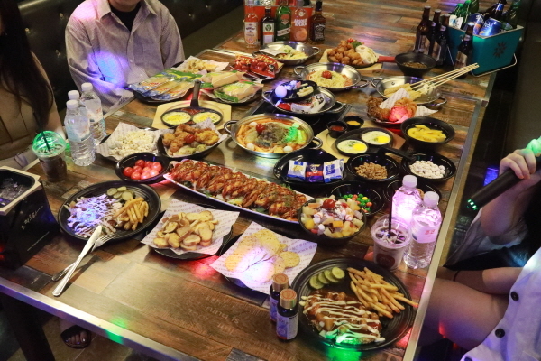
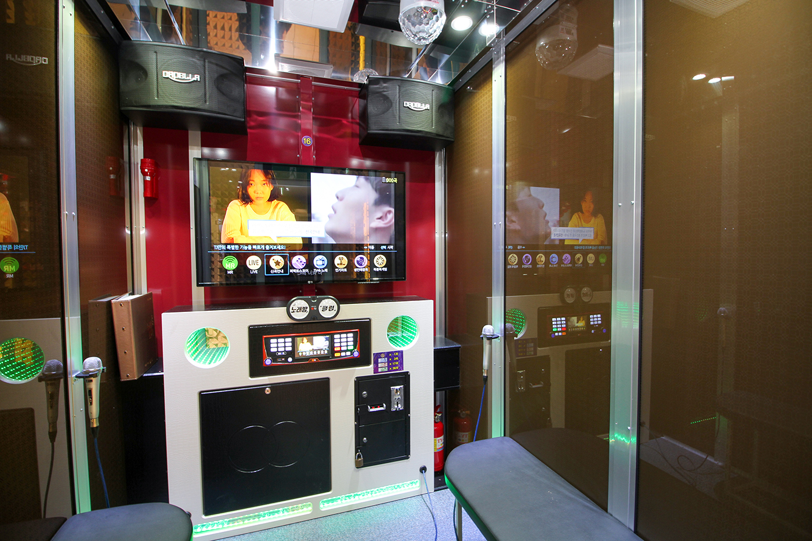

|  |  |
| You can enjoy singing while eating delicious food and drinking alcohol with close friends. |
Coin-operated karaoke rooms are popular among students and adults because they have a small space but offer very affordable prices. |